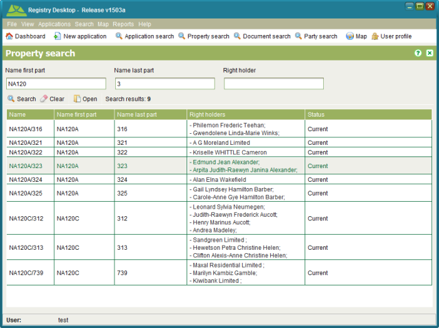

The Property Search screen allows you to find and view state land as well as recorded
properties that may be of interest. It can be accessed from the Search > Property menu or
selecting Property search
Property search

Property Search State Land tab
Property Search Property tab
Property search provides two search tabs. The State Land tab can be used to locate state land properties. The Property tab can be used to locate any recorded property that has been loaded into SOLA State Land. You can search for state land or recorded property using any combination search criteria and all text based search fields support partial and full matching.
To view the details for a property, select the property in the appropriate Search results
list and click Open. To clear the search criteria from a search tab,
click
Open. To clear the search criteria from a search tab,
click  Clear.
Clear.
The Property Search can be used to locate and reassign the property manager for any state
land property. Search for the property to reassign and check the appropriate checkbox in the
search results. If you have the Assign Property security privilege, the  Assign tool will enable allowing you to reassign the
property manager for the state land property. You can also reassign the property manager in
bulk by checking more than one property in the search results list prior to clicking
Assign tool will enable allowing you to reassign the
property manager for the state land property. You can also reassign the property manager in
bulk by checking more than one property in the search results list prior to clicking  Assign.
Assign.
The search criteria available for state land includes
|
The reference number assigned to the property by the state land agency. This search field supports partial and full matching. |
|
The description of the state land property. This search field supports partial and full matching. |
|
The name of any right holder associated to an interest on the state land property such as the name of the State Landholder. This search field supports partial and full matching. |
|
The house number, street address or general locality listed on any parcel linked to a state land property. This search field supports partial and full matching. |
|
The parcel number of any parcel linked to a state land property (e.g. Lot 124). This search field supports partial and full matching. |
|
The plan number of any parcel linked to a state land property (e.g. DP 3456). This search field supports partial and full matching. |
|
The land use of any parcel linked to a state land property e.g. Residential, Road, Commercial, etc. The dropdown lists all available options although this list can be reconfigured to match those land uses required by the State Land Agency. |
|
The name of the property manager assigned to a state land property. This search field supports partial and full matching. |
|
The reference number assigned to an interest associated to a state land property. This search field supports partial and full matching. |
|
The type of interest associated to a state land property e.g. Claim, Customary, Lease, etc. The dropdown lists all available options although this list can be reconfigured to match those interest types required by the State Land Agency. |
|
The subtype of interest associated to a state land property. Only populated if the selected Interest type has a list of sub types identified. This list can be reconfigured if necessary when updating the Interest types. |
|
The reference number for any document linked to the state land property. This includes any documents linked to the notes or interests of the property. This field does not support partial matching, but you can use the Document search to locate the appropriate document and copy the full document reference from there. |
The search criteria available for recorded property includes
|
Recorded property often has a multi-part name to ensure it is uniquely identified such as a property number and code to indicate the general locality of the property. This search field is matched to the first part of the formal name or identifier assigned to a recorded property and it supports partial and full matching. |
|
The last part of the formal name or identifier assigned to a recorded property e.g. the locality code. This search field supports partial and full matching. |
|
The name of any right holder associated to an interest on the recorded property such as the name of the owner. This search field supports partial and full matching. |
|
The house number, street address or general locality listed on any parcel linked to a recorded property. This search field supports partial and full matching. |
|
The parcel number of any parcel linked to a recorded property (e.g. Lot 124). This search field supports partial and full matching. |
|
The plan number of any parcel linked to a recorded property (e.g. DP 3456). This search field supports partial and full matching. |